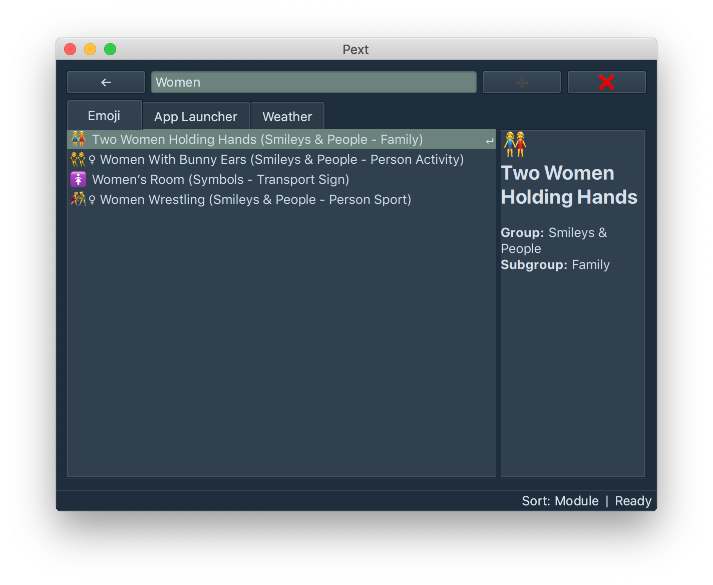
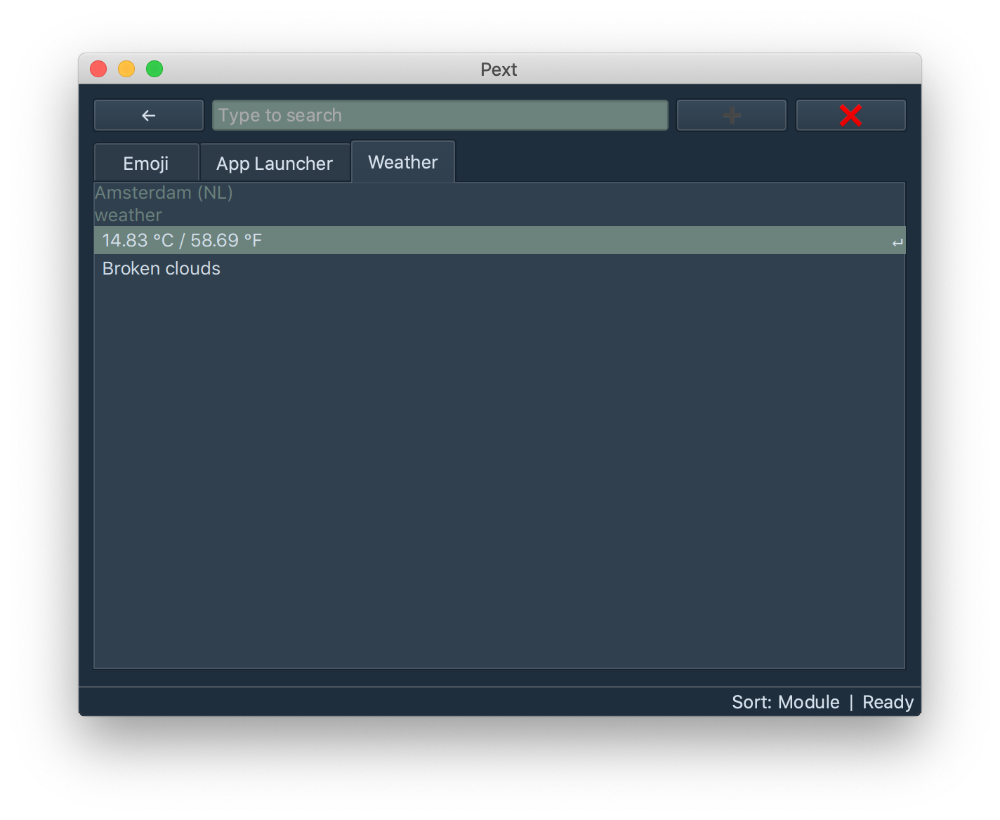

Your Swiss Army Knife
With Pext, you can do so much with just a few keystrokes. See what's currently being supported or extend it yourself.



Read the documentation Get the source code (GPLv3+)
Community & Help
The Pext community can be found on Matrix (#pext:matrix.org), Telegram (@PextTool) or IRC (#pext on Freenode). All these channels are connected, so use whatever you prefer. For beginners, unless you already have a Telegram account, we recommend Matrix.
Feel free to stop by for questions, tips or just a friendly chat with other users.
You may also ask for support on Twitter.
Chat via Matrix Chat via Telegram Chat via IRC